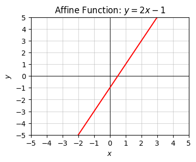
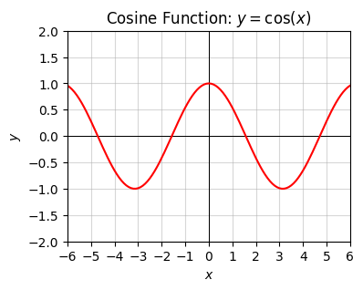
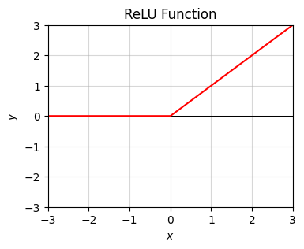
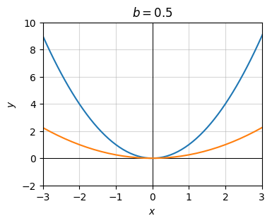

Code
from utils.math_ml import *You can understand machine learning at an intuitive level without knowing much math at all. In fact, you can get pretty far this way. People without strong math backgrounds build ML products, win Kaggle competitions, and write new ML frameworks all the time. However, at some point you may find yourself really wanting to understand how the algorithms work at a deeper level, and if you want to do that, you’ll need to learn some math. Not a huge amount of math, but the basics of a several fundamental topics for sure. My plan in the next series of lessons is to get you up to speed on this “minimum viable math” you’ll need to proceed further.
I’ll start this sequence by reviewing math you’ve probably seen before in high school or college. Such topics include things like elementary arithmetic, algebra, functions, and multivariate functions. I’ll also present the Greek alphabet since it’s helpful to be able to read and write many of these letters in machine learning. Let’s get started.
from utils.math_ml import *It’s useful in machine learning to be able to read and manipulate basic arithmetic and algebraic equations, particularly when reading research papers, blog posts, or documentation. I won’t go into depth on the basics of high school arithmetic and algebra. I do have to assume some mathematical maturity of the reader, and this seems like a good place to draw the line. I’ll just mention a few key points.
Recall that numbers can come in several forms. We can have,
You should be familiar with the usual arithmetic operations defined on these systems of numbers. Things like addition, subtraction, multiplication, and division. You should also at least vaguely recall the order of operations, which defines the order in which complex arithmetic operations with parenthesis are carried out. For example,
\[(5+1) \cdot \frac{(7-3)^2}{2} = 6 \cdot \frac{4^2}{2} = 6 \cdot \frac{16}{2} = 6 \cdot 8 = 48.\]
You should be able to manipulate and simplify simple fractions by hand. For example,
\[\frac{3}{7} + \frac{1}{5} = \frac{3 \cdot 5 + 1 \cdot 7}{7 \cdot 5} = \frac{22}{35} \approx 0.62857.\]
As far as basic algebra goes, you should be familiar with algebraic expressions like \(x+5=7\) and be able to solve for the unknown variable \(x\),
\[x=7-5=2.\]
You should be able to take an equation like \(ax + b = c\) and solve it for \(x\) in terms of coefficients \(a, b, c\),
\[\begin{align*} ax + b &= c \\ ax &= c - b \\ x &= \frac{c - b}{a}. \end{align*}\]
You should also be able to expand simple expressions like this,
\[\begin{align*} (ax - b)^2 &= (ax - b)(ax - b) \\ &= (ax)^2 - (ax)b - b(ax) + b^2 \\ &= a^2x^2 - abx - abx + b^2 \\ &= a^2x^2 - 2abx + b^2. \end{align*}\]
It’s also worth recalling what a set is. Briefly, a set is a collection of unique elements. Usually those elements are numbers. To say that an element \(x\) is an element of a set \(S\), we’d write \(x \in S\), read “\(x\) is in \(S\)”. If \(x\) is not in the set, we’d write \(x \notin S\). For example, the set of elements \(1, 2, 3\) can be denoted \(S = \{1, 2, 3\}\). Then \(1 \in S\), but \(5 \notin S\).
I’ve already mentioned the most common sets we’ll care about, namely the natural numbers \(\mathbb{N}\), integers \(\mathbb{Z}\), rational numbers \(\mathbb{Q}\), and real numbers \(\mathbb{R}\). Also of interest will be the intervals,
Think of intervals as representing line segments on the real line, connecting \(a\) to \(b\). I’ll touch on sets more in coming lessons. I just want you to be familiar with the notation, since I’ll occasionally use it.
There are two fundamental ways to perform mathematical computations: numerical computation, and symbolic computation. You’re familiar with both even though you may not realize it. Numerical computation involves crunching numbers. You plug in numbers, and get out numbers. When you type something like 10.5 / 12.4 in python, it will return a number, like 0.8467741935483871. This is numerical computation.
10.5 / 12.40.8467741935483871This contrasts with a way of doing computations that you learned in math class, where you manipulate symbols. This is called symbolic computation. Expanding an equation like \((ax-b)^2\) to get \(a^2x^2 - 2abx + b^2\) is an example of a symbolic computation. You see the presence of abstract variables like \(x\) that don’t have a set numeric value.
Usually in practice we’re interested in numerical computations. We’ll mostly be doing that in this book. But sometimes, when working with equations, we’ll need to do symbolic computations as well. Fortunately, python has a library called SymPy, or sympy, that can do symbolic computation automatically. I won’t use it a whole lot in this book, but it will be convenient in a few places to show you that you don’t need to manipulate mathematical expressions by hand all the time.
To use sympy, I’ll import sympy with the alias sp. Before defining a function to operate on, we first have to encode all the symbols in the problem as sympy Symbol objects. Once that’s done, we can create equations out of them and perform mathematical operations.
Here’s an example of using sympy to expand the equation above, \((ax-b)^2\).
import sympy as spa = sp.Symbol('a')
b = sp.Symbol('b')
x = sp.Symbol('x')
a, b, x(a, b, x)equation = (a * x - b) ** 2
expanded = sp.expand(equation, x)
print(f'expanded equation: {expanded}')expanded equation: a**2*x**2 - 2*a*b*x + b**2We can also use sympy to solve equations. Here’s an example of solving the quadratic equation \(x^2 = 6\) for its two roots, \(x = \pm \sqrt{6}\).
equation = x**2 - 6
solutions = sp.solve(equation, x)
print(f'solutions = {solutions}')solutions = [-sqrt(6), sqrt(6)]Sympy has a lot of functionality, and it can be a very difficult library to learn due to its often strange syntax for things. Since we won’t really need it all that often I’ll skip the in depth tutorial. See the documentation if you’re interested.
As I’m sure you’ve seen before, a mathematical function is a way to map inputs \(x\) to outputs \(y\). That is, a function \(f(x)\) is a mapping that takes in a value \(x\) and maps it to a unique value \(y=f(x)\). These values can be either single numbers (called scalars), or multiple numbers (vectors or tensors). When \(x\) and \(y\) are both scalars, \(f(x)\) is called a univariate function.
Let’s quickly cover some of the common functions you’d have seen before in a math class, focusing mainly on the ones that show up in machine learning. I’ll also cover a couple machine-learning specific functions you perhaps haven’t seen before.
The most basic functions to be aware of are the straight-line functions: constant functions, linear functions, and affine functions:
All constant functions are linear functions, and all linear functions are affine functions. In the case of affine functions, the value \(b\) is called the intercept. It corresponds to the value where the function crosses the y-axis. The value \(a\) is called the slope. It corresponds to the steepness of the curve, i.e. its height over its width (or “rise” over “run”). Notice linear functions are the special case where the intercept is always the origin \(x=0, y=0\).
We can plot these and any other univariate function \(y=f(x)\) in the usual way you learned about in school. We sample a lot of \((x,y)\) pairs from the function, and plot them on a grid with a horizontal x-axis and vertical y-axis.
Before plotting some examples I need to mention that plotting in python is usually done with the matplotlib library. Typically what we’d do to get a very simple plot is:
plt, which is the alias to the submodule matplotlib.pyplotx values we want to plot, e.g. using np.linspace or np.arangey values either directly, or by first defining a python function f(x)plt.(x, y), followed by plt.show().Note step (2) requires another library called numpy to create the grid of points. You don’t have to use numpy for this, but it’s typically easiest. Usually numpy is imported with the alias np. Numpy is python’s main library for working with numerical arrays. We’ll cover it in much more detail in future lessons.
Let me go ahead and load these libraries. I’ll also show a simple example of a plot. What I’ll do is define a grid x of 100 equally spaced points between -10 and 10, and plot the function \(y=x-1\) using the method described above.
import numpy as np
import matplotlib.pyplot as pltx = np.linspace(-10, 10, 100)
y = x - 1
plt.plot(x, y)
plt.show()
This plot is pretty ugly. It’s too big, arbitrarily scaled, and doesn’t include any information about what’s being plotted against what. In matplotlib if you want to include all these things to make nice plots you have to include a bunch of extra style commands.
For this reason, for the rest of the plotting in this lesson I’m going to use a helper function plot_function, which takes in x and y, the range of x values we want to plot, and an optional title. I didn’t think the details of this helper function were worth going into now, so I abstracted it away into the file utils.py in this same directory. It uses matplotlib like I described, but with a good bit of styling to make the plot more readable. If you really want to see the details perhaps the easiest thing to do is create a cell below using ESC-B and type the command ??plot_function, which will print the code inside the function as the output.
Back to it, let’s plot one example each of a constant function \(y=2\), a linear function \(y=2x\), and an affine function \(2x-1\).
x = np.arange(-10, 10, 0.1)
f = lambda x: 2 * np.ones(len(x))
plot_function(x, f, xlim=(-5, 5), ylim=(-5, 5), ticks_every=[1, 1],
title='Constant Function: $y=2$')x = np.arange(-10, 10, 0.1)
f = lambda x: 2 * x
plot_function(x, f, xlim=(-5, 5), ylim=(-5, 5), ticks_every=[1, 1],
title='Linear Function: $y=2x$')
x = np.arange(-10, 10, 0.1)
f = lambda x: 2 * x - 1
plot_function(x, f, xlim=(-5, 5), ylim=(-5, 5), ticks_every=[1, 1],
title='Affine Function: $y=2x-1$')Polynomial functions are just sums of positive integer powers of \(x\), e.g. something like \(y=3x^2+5x+1\) or \(y=x^{10}-x^{3}+4\). The highest power that shows up in the function is called the degree of the polynomial. For example, the above examples have degrees 2 and 10 respectively. Polynomial functions tend to look like lines, bowls, or roller coasters that turn up and down some number of times.
A major example is the quadratic function \(y=x^2\), which is just an upward-shaped bowl. Its bowl-shaped curve is called a parabola. We can get a downward-shaped bowl by flipping the sign to \(y=-x^2\).
x = np.arange(-10, 10, 0.1)
f = lambda x: x ** 2
plot_function(x, f, xlim=(-5, 5), ylim=(0, 10), ticks_every=[1, 1],
title='Quadratic Function: $y=x^2$')The next one up is the cubic function \(y=x^3\). The cubic looks completely different from the bowl-shaped parabola.
x = np.arange(-10, 10, 0.1)
f = lambda x: x ** 3
plot_function(x, f, xlim=(-5, 5), ylim=(-5, 5), ticks_every=[1, 1],
title='Cubic Function: $y=x^3$')Polynomials can take on much more interesting shapes than this. Here’s a more interesting polynomial degree 10,
\[y = (x^2 - 1)^5 - 5(x^2 - 1)^4 + 10(x^2 - 1)^3 - 10(x^2 - 1)^2 + 5(x^2 - 1) - 1.\]
x = np.arange(-10, 10, 0.1)
def f(x):
y = (x**2 - 1)**5 - 5 * (x**2 - 1)**4 + 10 * (x**2 - 1)**3 -
10 * (x**2 - 1)**2 + 5 * (x**2 - 1) - 1
plot_function(x, f, xlim=(-3, 3), ylim=(-40, 40), ticks_every=[1, 10],
title='Arbitrary Polynomial')Rational functions are functions that are ratios of polynomial functions. Examples might be \(y=\frac{1}{x}\), or
\[y=\frac{x^3+x+1}{x^2-1}.\]
These functions typically look kind of like polynomial functions, but have points where the curve “blows up” to positive or negative infinity. The points where the function blows up are called poles or asymptotes.
Here’s a plot of the function
\[y=\frac{x^3+x+1}{x^2-1}.\]
Notice how weird it looks. There are asymptotes (the vertical lines) where the function blows up at \(\pm 1\), which is where the denominator \(x^2-1=0\).
x = np.arange(-10, 10, 0.01)
f = lambda x: (x ** 3 + x + 1) / (x ** 2 - 1)
plot_function(x, f, xlim=(-5, 5), ylim=(-5, 5), ticks_every=[1, 1],
title='Rational Function')Here’s a plot of \(y=\frac{1}{x}\). There’s an asymptote at \(x=0\). When \(x > 0\) it starts at \(+\infty\) and tapers down to \(0\) as \(x\) gets large. When \(x < 0\) it does the same thing, except flipped across the origin \(x=y=0\). This is an example of an odd function, a function that looks like \(f(x)=-f(x)\), which is clear in this case since \(1/(-x)=-1/x\). Functions like the linear function \(y=x\) and the cubic function \(y=x^3\) are also odd functions.
x = np.arange(-10, 10, 0.1)
f = lambda x: 1 / x
plot_function(x, f, xlim=(-5, 5), ylim=(-5, 5), ticks_every=[1, 1],
title='Odd Function: $y=1/x$')A related function is \(y=\frac{1}{|x|}\). The difference here is that \(|x|\) can never be negative. This means \(f(x)=f(-x)\). This is called an even function. Functions like this are symmetric across the y-axis. The quadratic function \(y=x^2\) is also an even function.
x = np.arange(-10, 10, 0.1)
f = lambda x: 1 / np.abs(x)
plot_function(x, f, xlim=(-5, 5), ylim=(-1, 5), ticks_every=[1, 1],
title='Even Function: $y=1/|x|$')Functions that look like \(y=\frac{1}{x^n}\) for some \(n\) are sometimes called inverse, hyperbolic. These can be represented more easily by using a negative power like \(y=x^{-n}\), which means the exact same thing as \(y=\frac{1}{x^n}\).
We can extend \(n\) to deal with things like square roots or cube roots or any kind of root as well by allowing \(n\) to be non-integer. For example, we can represent the square root function \(y=\sqrt{x}\) as \(y=x^{1/2}\), and the cube root \(y=\sqrt[3]{x}\) as \(y=x^{1/3}\). Roots like these are only defined when \(x \geq 0\).
The general class of functions of the form \(y=x^p\) for some arbitrary real number \(p\) are often called power functions.
Here’s a plot of what the square root function looks like. Here \(y\) grows slower than a linear function, but still grows arbitrarily large with \(x\).
x = np.arange(0, 10, 0.1)
f = lambda x: np.sqrt(x)
plot_function(x, f, xlim=(0, 5), ylim=(-2, 4), ticks_every=[1, 1],
title='Square Root: $y=\sqrt{x}=x^{1/2}$')
Power functions obey the following rules:
| Rule | Example |
| \(x^0 = 1\) | \(2^0 = 1\) |
| \(x^{m+n} = x^m x^n\) | \(3^{2+5} = 3^2 3^5 = 3^8 = 6561\) |
| \(x^{m-n} = \frac{x^m}{x^n}\) | \(3^{2-5} = \frac{3^2}{3^5} = 3^{-3} \approx 0.037\) |
| \(x^{mn} = (x^m)^n\) | \(2^{2 \cdot 5} = (2^2)^5 = 2^{10} = 1024\) |
| \((xy)^n = x^n y^n\) | \((2 \cdot 2)^3 = 2^3 2^3 = 4^3 = 2^6 = 64\) |
| \(\big(\frac{x}{y}\big)^n = \frac{x^n}{y^n}\) | \(\big(\frac{2}{4}\big)^3 = \frac{2^3}{4^3} = \frac{1}{8}\) |
| \(\big(\frac{x}{y}\big)^{-n} = \frac{y^n}{x^n}\) | \(\big(\frac{2}{4}\big)^{-3} = \frac{4^3}{2^3} = 2^3 = 8\) |
| \(x^{1/2} = \sqrt{x} = \sqrt[2]{x}\) | \(4^{1/2} = \sqrt{4} = 2\) |
| \(x^{1/n} = \sqrt[n]{x}\) | \(3^{1/4} = \sqrt[4]{3} \approx 1.316\) |
| \(x^{m/n} = \sqrt[n]{x^m}\) | \(3^{3/4} = \sqrt[4]{3^3} = \sqrt[4]{9} \approx 1.732\) |
| \(\sqrt[n]{xy} = \sqrt[n]{x} \sqrt[n]{y}\) | \(\sqrt[4]{3 \cdot 2} = \sqrt[4]{3} \sqrt[4]{2} \approx 1.565\) |
| \(\sqrt[n]{\frac{x}{y}} = \frac{\sqrt[n]{x}}{\sqrt[n]{y}}\) | \(\sqrt[4]{\frac{3}{2}} = \frac{\sqrt[4]{3}}{\sqrt[4]{2}} \approx 1.107\) |
It’s important to remember that power functions do not distribute over addition, i.e.
\[(x+y)^n \neq x^n + y^n,\]
and by extension nor do roots,
\[\sqrt[n]{x+y} \neq \sqrt[n]{x} + \sqrt[n]{y}.\]
Two very important functions are the exponential function \(y=\exp(x)\) and the logarithm function \(y=\log(x)\). They show up surprisingly often in machine learning and the sciences, certainly more than most other special functions do.
The exponential function can be written as a power by defining a number \(e\) called Euler’s number, given by \(e = 2.71828\dots\) . Like \(\pi\), \(e\) is an example of an irrational number, i.e. a number that can’t be represented as a ratio of integers. Using \(e\), we can write the exponential function in the more usual form \(y=e^x\), where it’s roughly speaking understood that we mean “multiply \(e\) by itself \(x\) times”. For example, \(\exp(2) = e^2 = e \cdot e\).
The logarithm is defined as the inverse of the exponential function. It’s the unique function satisfying \(\log(\exp(x)) = x\). The opposite is also true since the exponential must then be the inverse of the logarithm function, \(\exp(\log(x)) = x\). This gives a way of mapping between the two functions,
\[\log(a) = b \quad \Longleftrightarrow \quad \exp(b) = a.\]
Here are some plots of what the exponential and logarithm functions look like. The exponential function is a function that blows up very, very quickly. The log function grows very, very slowly (much more slowly than the square root does).
Note the log function is only defined for positive-valued numbers \(x \geq 0\), with \(\log(+0)=-\infty\). This is dual to the exponential function only taking on \(y \geq 0\).
x = np.arange(-5, 5, 0.1)
f = lambda x: np.exp(x)
plot_function(x, f, xlim=(-5, 5), ylim=(-1, 10), ticks_every=[1, 2],
title='Exponential Function: $y=\exp(x)$')x = np.arange(0.01, 5, 0.1)
f = lambda x: np.log(x)
plot_function(x, f, xlim=(-1, 5), ylim=(-5, 2), ticks_every=[1, 1],
title='Logarithm Function: $y=\log(x)$')
The exponential and logarithm functions I defined are the “natural” way to define these functions. We can also have exponential functions in other bases, \(y=a^x\) for any positive number \(a\). Each \(a\) has an equivalent logarithm, written \(y = \log_{a}(x)\). The two functions \(y=a^x\) and \(y=\log_{a}(x)\) are inverses of each other. When I leave off the \(a\), it’s assumed that all logs are the natural base \(a=e\), sometimes also written \(\ln(x)\).
Two common examples of other bases that show up sometimes are the base-2 functions \(2^x\) and \(\log_{2}(x)\), and the base-10 functions \(10^x\) and \(\log_{10}(x)\). Base-2 functions in particular show up often in computer science because of the tendency to think in bits. Base-10 functions show up when we want to think about how many digits a number has.
Here are some rules that exponentials and logs obey:
| Rule | Example |
| \(e^0 = 1\) | |
| \(\log(1) = 0\) | |
| \(\log(e) = 1\) | |
| \(e^{a+b} = e^a e^b\) | \(e^{2+5} = e^2 e^5 = e^8 \approx 2980.96\) |
| \(e^{a-b} = \frac{e^a}{e^b}\) | \(e^{2-5} = \frac{e^2}{e^5} = e^{-3} \approx 0.0498\) |
| \(e^{ab} = (e^a)^b\) | \(e^{2 \cdot 5} = (e^2)^5 = e^{10} \approx 22026.47\) |
| \(a^b = e^{b \log(a)}\) | \(2^3 = e^{3 \log(2)} = 8\) |
| \(\log(ab) = \log(a) + \log(b)\) | \(\log(2 \cdot 5) = \log(2) + \log(5) = \log(10) \approx 2.303\) |
| \(\log\big(\frac{a}{b}\big) = \log(a) - \log(b)\) | \(\log\big(\frac{2}{5}\big) = \log(2) - \log(5) \approx -0.916\) |
| \(\log(a^b) = b\log(a)\) | \(\log(5^2) = 2\log(5) \approx 3.219\) |
| \(\log_a(x) = \frac{\log(x)}{\log(a)}\) | \(\log_2(5) = \frac{\log(5)}{\log(2)} \approx 2.322\) |
Here’s an example of an equation involving exponentials and logs. Suppose you have \(n\) bits of numbers (perhaps it’s the precision in some float) and you want to know how many digits this number takes up in decimal form (what you’re used to). This would be equivalent to solving the following equation for \(x\),
\[\begin{align*} 2^n &= 10^{x} \\ \log(2^n) &= \log(10^{x}) \\ n\log(2) &= x\log(10) \\ x &= \frac{\log(2)}{\log(10)} \cdot n \\ x &\approx 0.3 \cdot n. \\ \end{align*}\]
For example, you can use this formula to show that 52 bits of floating point precision translates to about 15 to 16 digits of precision. In numpy, the function np.log function calculates the (base-\(e\)) log of a number.
n = 52
x = np.log(2) / np.log(10) * n
print(f'x = {x}')x = 15.65355977452702Other textbook functions typically covered in math courses are the trig functions: sine, cosine, tangent, cosine, cosecant, and cotangent. Of these functions, the most important to know are the sine function \(y=\sin x\), the cosine function \(y = \cos x\), and sometimes the tangent function \(y = \tan x\).
Here’s what their plots look like. They’re both waves that repeat themselves, in the sense \(f(x + 2\pi) = f(x)\). The length for the function to repeat itself is called the period, in this case \(2\pi \approx 6.28\). Note that the cosine is just a sine function that’s shifted right by \(\frac{\pi}{2} \approx 1.57\).
x = np.arange(-10, 10, 0.1)
f = lambda x: np.sin(x)
plot_function(x, f, xlim=(-6, 6), ylim=(-2, 2), ticks_every=[1, 0.5],
title='Sine Function: $y=\sin(x)$')
x = np.arange(-10, 10, 0.1)
f = lambda x: np.cos(x)
plot_function(x, f, xlim=(-6, 6), ylim=(-2, 2), ticks_every=[1, 0.5],
title='Cosine Function: $y=\cos(x)$')Trig functions don’t really show up that much in machine learning, so I won’t remind you of all those obscure trig rules you’ve forgotten. I’ll just mention that we can define all the other trig functions using the sine and cosine as follows,
\[\begin{align*} &\tan x = \frac{\sin x}{\cos x}, \\ &\csc x = \frac{1}{\sin x}, \\ &\sec x = \frac{1}{\cos x}, \\ &\cot x = \frac{1}{\tan x} = \frac{\cos x}{\sin x}. \end{align*}\]
We can talk about the inverse of trig functions as well. These are just the functions that undo the trig operations and give you back the angle (in radians). Since none of the trig functions are monotonic, we can’t invert them on the whole real line, but only on a given range.
Below I’ll just list the inverse sine, cosine, and tangent functions and their defined input and output ranges. Note by historical convention, these inverse functions are usually called the arcsine, arccosine, and arctangent respectfully.
| Inverse Function | Input Range | Output Range |
| \(y = \arcsin x = \sin^{-1} x\) | \(-1 \leq x \leq 1\) | \(-90^\circ \leq y \leq 90^\circ\) |
| \(y = \arccos x = \cos^{-1} x\) | \(-1 \leq x \leq 1\) | \(0^\circ \leq y \leq 180^\circ\) |
| \(y = \arctan x = \tan^{-1} x\) | \(-\infty < x < \infty\) | \(-90^\circ \leq y \leq 90^\circ\) |
The functions covered so far are examples of continuous functions. Their graphs don’t have jumps or holes in them anywhere. Continuous functions we can often write using a single equation, like \(y=x^2\) or \(y=1 + \sin(x)\). We can also have functions that require more than one equation to write. These are called piecewise functions. Piecewise functions usually aren’t continuous, but sometimes can be.
An example of a discontinuous piecewise function is the unit step function \(y=u(x)\) given by
\[ y = \begin{cases} 0 & x < 0, \\ 1 & x \geq 0. \end{cases} \]
This expression means \(y=0\) whenever \(x < 0\), but \(y=1\) whenever \(x \geq 0\). It breaks up into two pieces, one horizontal line \(y=0\) when \(x\) is negative, and another horizontal line \(y=1\) when \(x\) is positive.
Using Boolean expressions, we can also write this function in a more economical way by agreeing to identify \(x=1\) with \(\text{TRUE}\) and \(x=0\) with \(\text{FALSE}\), which python does by default. In this notation, we can write
\[u(x) = [x \geq 0],\]
which means exactly the same thing as the piecewise definition, since \(x \geq 0\) is only true when (you guessed it), \(x \geq 0\).
Here’s a plot of this function. Note the discontinuous jump at \(x=0\).
x = np.arange(-10, 10, 0.01)
f = lambda x: (x >= 0)
plot_function(x, f, xlim=(-3, 3), ylim=(-1, 2), ticks_every=[1, 0.5],
title='Unit Step Function: $y=u(x)$')
An example of a piecewise function that’s continuous is the ramp function, defined by
\[ y = \begin{cases} 0 & x < 0, \\ x & x \geq 0. \end{cases} \]
This function gives a horizontal line \(y=0\) when \(x\) is negative, and a \(45^\circ\) line \(y=x\) when \(x\) is positive. Both lines connect at \(x=0\), but leave a kink in the graph.
Another way to write the same thing using Boolean expressions is \(y = x \cdot [x \geq 0]\), which is of course just \(y = x \cdot u(x)\).
In machine learning it’s more common to write the ramp function using the \(\max\) function as \(y = \max(0,x)\). This means, for each \(x\), take that value and compare it with \(0\), and take the maximum of those two. That is, if \(x\) is negative take \(y=0\), otherwise take \(y=x\). It’s also more common to call this function a rectified linear unit, or ReLU for short. It’s an ugly, unintuitive name, but unfortunately it’s stuck in the field.
Here’s a plot of the ramp or ReLU function. Notice how it stays at \(y=0\) for a while, then suddenly “ramps upward” at \(x=0\).
x = np.arange(-10, 10, 0.1)
f = lambda x: x * (x >= 0)
plot_function(x, f, xlim=(-3, 3), ylim=(-3, 3), ticks_every=[1, 1],
title='ReLU Function')Last, I’ll mention here the absolute value function \(y = |x|\), defined by the piecewise function
\[ y = \begin{cases} x & \text{if } x \ge 0 \\ -x & \text{if } x < 0. \end{cases} \]
The absolute value just ignores negative signs and makes everything positive. The function looks like the usual line \(y=x\) when positive, but like the negative-sloped line \(y=-x\) when negative. At \(x=0\) the two lines meet, creating a distinctive v-shape. To get the absolute value function in python, use abs or np.abs.
x = np.arange(-5, 5, 0.1)
f = lambda x: abs(x)
plot_function(x, f, xlim=(-5, 5), ylim=(0, 5), ticks_every=[1, 1],
title='Absolute Value Function: $y=|x|$')
We can also have any arbitrary hybrid of the above functions. We can apply exponentials to affine functions, logs to sine functions, sines to exponential functions. In essence, this kind of layered composition of functions is what a neural network is as we’ll see later on.
Math folks often write an abstract compositional function as a function applied to another function, like \(y=f(g(x))\) or \(y=(f \circ g)(x)\). These can be chained arbitrarily many times, not just two. Neural networks do just that, often hundreds or thousands of times.
Consider, for example, the function composition done by applying the following functions in sequence:
to get the full function \[y = r(h(g(x))) = \frac{1}{1 + e^{-(wx+b)}}.\]
Here’s a plot of what this function looks like for the “standard form” where \(w=1, b=0\). Notice that \(0 \leq y \leq 1\). The values of \(x\) get “squashed” to values between 0 and 1 after the function is applied.
x = np.arange(-10, 10, 0.1)
f = lambda x: 1 / (1 + np.exp(-x))
plot_function(x, f, xlim=(-6, 6), ylim=(-0.2, 1.2), ticks_every=[2, 0.2],
title='Sigmoid Function')This function is called the sigmoid function. The sigmoid is very important in machine learning since it in essence creates probabilities. We’ll see it a lot more. The standard form sigmoid function, usually written \(\sigma(x)\), is given by
\[\sigma(x) = \frac{1}{1 + e^{-x}}.\]
Arbitrary affine transformations of the standard form would then be written as \(\sigma(wx+b)\).
A similar looking function shows up sometimes as well called the hyperbolic tangent or tanh function, which has the (standard) form
\[\tanh(x) = \frac{e^x - e^{-x}}{e^x + e^{-x}}.\]
The tanh function looks pretty much the same as the sigmoid except it’s rescaled vertically so that \(-1 \leq y \leq 1\).
Here’s a plot of the tanh function. Notice how similar it looks to the sigmoid with the exception of the scale of the y-axis.
x = np.arange(-10, 10, 0.1)
f = lambda x: (np.exp(x) - np.exp(-x)) / (np.exp(x) + np.exp(-x))
plot_function(x, f, xlim=(-5, 5), ylim=(-2, 2), ticks_every=[1, 0.5],
title='Tanh Function')
Suppose we have some arbitrary function \(f(x)\) and we apply a series of compositions to get a new function \[g(x)=a \cdot f(b \cdot (x + c)) + d.\] We can regard each parameter \(a,b,c,d\) as doing some kind of geometric transformation to the graph of the original function \(f(x)\). Namely,
Here’s an example of how these work. Consider the function \(f(x)=x^2\). We’re going to apply each of these transformations one by one to show what they do to the graph of \(f(x)\).
First, let’s look at the transformation \(g(x) = \frac{1}{2} f(x) = \frac{1}{2} x^2\). Here \(a=\frac{1}{2}\) and the rest are zero. I’ll plot it along side the original graph (the blue curve). Notice the graph gets flattened vertically by a factor of two (the orange curve).
x = np.arange(-10, 10, 0.1)
f = lambda x: x ** 2a = 1 / 2
g = lambda x: a * x ** 2
plot_function(x, [f, g], xlim=(-3, 3), ylim=(-2, 10), ticks_every=[1, 2],
title=f'$a={a}$')
Now consider at the transformation
\[g(x) = f\big(\frac{1}{2} x\big) = \bigg(\frac{1}{2} x \bigg)^2.\]
Here \(b=\frac{1}{2}\) and the rest are zero. Notice the graph again gets flattened but in a slightly different way.
b = 1 / 2
g = lambda x: (b * x) ** 2
plot_function(x, [f, g], xlim=(-3, 3), ylim=(-2, 10), ticks_every=[1, 2],
title=f'$b={b}$')Next, consider the transformation \(g(x) = f(x-1) = (x-1)^2.\) Here \(c=1\) and the rest are zero. Notice the graph’s shape doesn’t change. It just gets shifted right by \(c=1\) since \(c\) is negative.
c = -1
g = lambda x: (x + c) ** 2
plot_function(x, [f, g], xlim=(-3, 3), ylim=(-7, 7), ticks_every=[1, 2],
title=f'$c={c}$')Finally, let’s look at the transformation \(g(x) = f(x) + 2 = x^2 + 2\). Here \(d=2\) and the rest are zero. Notice again the graph’s shape doesn’t change. It just gets shifted up by \(d=2\) units.
d = 2
g = lambda x: x ** 2 + d
plot_function(x, [f, g], xlim=(-3, 3), ylim=(-1, 8), ticks_every=[1, 2],
title=f'$d={d}$')
Let’s now put them all together to see what happens. We should see rescaling in both directions and shifts in both directions. It’s hard to see in the plot, but it’s all there if you zoom in. The vertex of the parabola is at the point \(x=c=1, y=d=2\). And the stretching factors due to \(a=b=1/2\) are both acting to flatten the parabola.
g = lambda x: a * (b * (x + c)) ** 2 + d
plot_function(x, [f, g], xlim=(-8, 8), ylim=(-2, 10), ticks_every=[2, 2],
title=f'$a={a}, b={b}, c={c}, d={d}$')
What we’ve covered thus far only deals with univariate functions, functions where \(y=f(x)\), but \(x\) and \(y\) are just single numbers, i.e. scalars. In machine learning we’re almost always dealing with multivariate functions with lots of variables, sometimes billions of them. It turns out that most of what I’ve covered so far extends straight forwardly to multivariate functions with some small caveats, which I’ll cover below.
Simply put, a multivariate function is a function of multiple variables. Instead of a single variable \(x\), we might have several variables, e.g. \(x_0, x_1, x_2, x_3, x_4, x_5\),
\[y = f(x_0, x_1, x_2, x_3, x_4, x_5).\]
If you think about mathematical functions analogously to python functions it shouldn’t be surprising functions can have multiple arguments. They usually do, in fact.
Here’s an example of a function that takes two arguments \(x\) and \(y\) and produces a single output \(z\), more often written as a bivariate function \(z=f(x,y)\). The example I’ll look at is \(z = x^2 + y^2\). I’ll evaluate the function at three points:
The main thing to notice is the function does exactly what you think it does. If you plug in 2 values, you get out 1 value.
f = lambda x, y: x ** 2 + y ** 2
print(f'z = f{(0, 0)} = {f(0, 0)}')
print(f'z = f{(1, -1)} = {f(1, -1)}')
print(f'z = f{(0, 1)} = {f(0, 1)}')z = f(0, 0) = 0
z = f(1, -1) = 2
z = f(0, 1) = 1We can also have functions that map multiple inputs to multiple outputs. Suppose we have a function that takes in 2 values \(x_0, x_1\) and outputs 2 values \(y_0, y_1\). We’d write this as \((y_0, y_1) = f(x_0, x_1)\).
Consider the following example,
\[(y_0, y_1) = f(x_0, x_1) = (x_0+x_1, x_0-x_1).\]
This is really just two functions, both functions of \(x_0\) and \(x_1\). We can completely equivalently write this function as
\[y_0 = f_1(x_0, x_1) = x_0+x_1,\] \[y_1 = f_2(x_0, x_1) = x_0-x_1.\]
Here’s this function defined and evaluated at the point \(x_0=1\), \(x_1=1\).
f = lambda x0, x1: (x0 + x1, x0 - x1)
print(f'(y0, y1) = {f(1, 1)}')(y0, y1) = (2, 0)For now I’ll just focus on the case of multiple inputs, single output like the first example. These are usually called scalar-valued functions. We can also have vector-valued functions, which are functions whose outputs can have multiple values as well. I’ll focus on scalar-valued functions here.
A scalar-valued function of \(n\) variables \(x_0, x_1, \cdots, x_{n-1}\) has the form
\[y = f(x_0, x_1, \cdots, x_{n-1}).\]
Note \(n\) can be as large as we want it to be. When working with deep neural networks (which are just multivariate functions of a certain form) \(n\) can be huge. For example, if the input is a \(256 \times 256\) image, the input might be \(256^2=65536\) pixels. For a 10 second audio clip that’s sampled at 44 kHz, the input might be \(10*44k=440k\) amplitudes. Large numbers indeed.
Calculating the output of multivariate functions is just as straight-forward as for univariate functions pretty much. Unfortunately, visualizing them is much harder. The human eye can’t see 65536 dimensions, only 3 dimensions. This in some sense means we need to give up on the ability to “graph” a function and instead find other ways to visualize it.
One thing that sometimes help to visualize high dimension functions is to pretend they’re functions of two variables, like \(z=f(x,y)\). In this special case we can visualize the inputs as an xy-plane, and the output as a third axis sticking out perpendicular to the xy-plane from the origin. Each \(x,y\) pair will map to one unique \(z\) value. Done this way, we won’t get a graph of a curve as before, but a surface.
Here’s an example of what this might look like for the simple function \(z=x^2+y^2\). I’ll plot the function on the domain \(-10 \leq x \leq 10\) and \(-10 \leq y \leq 10\) using the helper function plot_3d. It takes in two lists of values x and y. I’ll use np.linspace to sample 100 points from -10 to 10 for each. Then I’ll define a lambda function that maps x and y to the output z. Passing these three arguments into the helper function gives us our 3D plot.
x = np.linspace(-10, 10, 100)
y = np.linspace(-10, 10, 100)
f = lambda x, y: x**2 + y**2plot_function_3d(x, y, f, title='3D Plot: $z=x^2+y^2$',
ticks_every=[5, 5, 50], labelpad=5, dist=12)Notice how the plot looks like an upward facing bowl. Imagine a bowl lying on a table. The table is the xy-plane. The bowl is the surface \(z=x^2+y^2\) we’re plotting. While the plot shows the general idea what’s going on, 3D plots can often be difficult to look at. They’re often slanted at funny angles and hide important details.
Here’s another way we can visualize the same function: Rather than create a third axis for \(z\), we can plot it directly on the xy-plane as a 2D plot. Since we’re dealing with a surface, not a curve, we have to do this for lots of different \(z\) values, which will give a family of curves. For example, we might plot all of the following curves corresponding to different values of \(z\) in the xy-plane,
\[\begin{align} 25 &= x^2 + y^2, \\ 50 &= x^2 + y^2, \\ 75 &= x^2 + y^2, \\ 100 &= x^2 + y^2, \\ 125 &= x^2 + y^2, \\ 150 &= x^2 + y^2. \end{align}\]
Doing this will give a family of curves on one 2D plot, with each curve representing some value of \(z\). In our example, these curves are all circles of radius \(z^2\). Each curve is called a level curve or level set.
These kinds of plots are called contour plots. A contour map can be thought of as looking at the surface from the top down, where each level set corresponds to slicing the function \(z=f(x,y)\) horizontally for different values of \(z\). This trick is often used in topographical maps to visualize 3D terrain on a 2D sheet of paper. Here is a contour plot for \(z=x^2+y^2\) using the above level curves.
plot_countour(x, y, f, title='Countour Plot: $z=x^2+y^2$')Notice how we get a bunch of concentric rings in the contour plot, each labeled by some value (their \(z\) values). These rings correspond to the circles I was talking about. You can visually imagine this plot as looking down from the top of the bowl. In the middle you see the bottom. The rings get closer together the further out you go, which indicates that the bowl is sloping steeper the further out we get.
We’ll see more examples of multivariate functions in the coming lessons.
In machine learning we’ll find ourselves frequently interested not just with single equations, but multiple equations each with many variables. One thing we might seek to do is solve these coupled systems, which means finding a solution that satisfies every equation simultaneously. Consider the following example,
\[\begin{alignat*}{3} x & {}+{} & y & {}={} & 2 \\ 2x & {}-{} & 3y & {}={} & 7. \end{alignat*}\]
This system consists of two equations, \(x + y = 2\), and \(2x - 3y = 7\). Each equation contains two unknown variables, \(x\) and \(y\). We need to find a solution for both \(x\) and \(y\) that satisfies both of these equations.
Usually the easiest and most general way to solve simple coupled systems like this is the method of substitution. The idea is to solve one equation for one variable in terms of the other, then plug that solution into the second equation to solve for the other variable. Once the second variable is solved for, we can go back and solve for the first variable explicitly. Let’s start by solving the first equation for \(x\) in terms of \(y\). This is pretty easy,
\[x = 2 - y.\]
Now we can take this solution for \(x\) and plug it into the second equation to solve for \(y\),
\[\begin{align*} 2x - 3y &= 7 \\ 2(2 - y) - 3y &= 7 \\ 4 - 5y &= 7 \\ 5y &= -3 \\ y &= -\frac{3}{5}. \end{align*}\]
With \(y\) in hand, we can now solve for \(x\), \(x = 2 - y = 2 + \frac{3}{5} = \frac{13}{5}\). Thus, the pair \(x=\frac{13}{5}\), \(y=-\frac{3}{5}\) is the solution that solves both of these coupled equations simultaneously.
Here’s sympy’s solution to the same system. It should of course agree with what I just got, which it does.
x, y = sp.symbols('x y')
eq1 = sp.Eq(x + y, 2)
eq2 = sp.Eq(2 * x - 3 * y, 7)
sol = sp.solve((eq1, eq2), (x, y))
print(f'x = {sol[x]}')
print(f'y = {sol[y]}')x = 13/5
y = -3/5Notice that both of the equations in this example are linear, since each term only contains terms proportional to \(x\) and \(y\). There are no terms like \(x^2\) or \(\sin y\) or whatever. Linear systems of equations are special because they can always be solved as long as there are enough variables. I’ll spend a lot more time on these when I get to linear algebra.
We can also imagine one or more equations being nonlinear. Provided we can solve each equation one-by-one, we can apply the method of substitution to solve these too. Here’s an example. Consider the nonlinear system
\[\begin{align*} e^{x + y} &= 10 \\ xy &= 1. \end{align*}\]
Let’s solve the second equation first since it’s easier. Solving for \(y\) gives \(y = \frac{1}{x}\). Now plug this into the first equation and solve for \(x\),
\[\begin{align*} e^{x + y} &= 10 \\ e^{x + 1/x} &= 10 \\ \log \big(e^{x + 1/x}\big) &= \log 10 \\ x + \frac{1}{x} &= \log 10 \\ x^2 - \log 10 \cdot x + 1 &= 0 \\ x &= \frac{1}{2} \bigg(\log 10 \pm \sqrt{(\log 10)^2 - 4}\bigg) \\ x &\approx 0.581, \ 1.722. \end{align*}\]
Note here I had to use the quadratic formula, which I’ll assume you’ve forgotten. If you have a quadratic equation of the form \(ax^2 + bx + c = 0\), then it will (usually) have exactly two solutions given by the formula
\[x = \frac{1}{2a} \bigg(-b \pm \sqrt{b^2 - 4ac}\bigg).\]
This means we have two different possible solutions for \(x\), which thus means we’ll also have two possible solutions to \(y\) since \(y=\frac{1}{x}\). Thus, this system has two possible solutions,
\[\text{Solution 1: }x \approx 0.581, \ y \approx 1.722,\] \[\text{Solution 2: }x \approx 1.722, \ y \approx 0.581.\]
It’s interesting how symmetric these two solutions are. They’re basically the same with \(x\) and \(y\) swapped. This is because the system has symmetry. You can swap \(x\) and \(y\) in the system above and not change the equation, which means the solutions must be the same up to permutation of \(x\) and \(y\)!
Here’s sympy’s attempt to solve this system.
x, y = sp.symbols('x y')
eq1 = sp.Eq(sp.exp(x + y), 10)
eq2 = sp.Eq(x * y, 1)
sol = sp.solve((eq1, eq2), (x, y))
print(f'x1 = {sol[0][0].round(5)} \t y1 = {sol[0][1].round(5)}')
print(f'x2 = {sol[1][0].round(5)} \t y2 = {sol[1][1].round(5)}')x1 = 0.58079 y1 = 1.72180
x2 = 1.72180 y2 = 0.58079In general, it’s not even possible to solve a system of nonlinear equations except using numerical methods. The example I gave was rigged so I could solve it by hand. General purpose root-finding algorithms exist that can solve arbitrary systems of equations like this numerically, no matter how nonlinear they are.
To solve a nonlinear system like this numerically, you can use the scipy function scipy.optimize.fsolve. Scipy is an extension of numpy that includes a lot of algorithms for working with non-linear functions. To use fsolve, you have to define the system as a function mapping a list of variables to a list of equations. You also have to specify a starting point x0 for the root finder. This tells it where to start looking for the root. Since nonlinear equations have multiple solutions, picking a different x0 can and will often give you a different root. I won’t dwell on all this since we don’t really need to deal with root finding much in machine learning.
from scipy.optimize import fsolve
system = lambda xy: [np.exp(xy[0] + xy[1]) - 10, xy[0] * xy[1] - 1]
solution = fsolve(system, x0=(1, 1))
print(f'solution = {solution}')solution = [0.5807888 1.7217963]We typically find ourselves performing operations on large numbers of numbers at a time. By far the most common operation is adding up a bunch of numbers, or summation. Suppose we have some sequence of \(n\) numbers \(x_0,x_1,x_2,\cdots,x_{n-1}\). They could be anything, related by a function, or not. If we wanted to sum them together to get a new number \(x\) we could write
\[x = x_0 + x_1 + x_2 + \cdots + x_{n-1}.\]
But it’s kind of cumbersome to always write like this. For this reason in math there’s a more compact notation to write sums called summation notation. We introduce the symbol \(\sum\) for “sum”, and write \[x = \sum_{i=0}^{n-1} x_i.\]
Read this as “the sum of all \(x_i\) for \(i=0,1,\cdots,n-1\) is \(x\)”. The index \(i\) being summed over is called a dummy index. It can be whatever we want since it never appears on the left-hand side. It gets summed over and then disappears. The lower and upper values \(i=0\) and \(i=n-1\) are the limits of the summation. The limits need not always be \(i=0\) and \(i=n-1\). We can choose them to be whatever we like as a matter of convenience.
Frequently summation notation is paired with some kind of generating function \(f(i) = x_i\) that generates the sequence. For example, suppose our sequence is generated by the function \(f(i) = i\), and we want to sum from \(i=1\) to \(i=n\). We’d have
\[x = \sum_{i=1}^n x_i = \sum_{i=1}^n i = 1 + 2 + \cdots + n = \frac{1}{2} n(n+1).\]
The right-hand term \(\frac{1}{2} n(n-1)\) is not obvious, and only applies to this particular sum. I just wrote it down since it’s sometimes useful to remember. This is a special kind of sum called an arithmetic series. Here’s a “proof” of this relationship using sympy.
i, n = sp.symbols('i n')
summation = sp.Sum(i, (i, 1, n)).doit()
print(f'sum i for i=1,...,n = {summation}')sum i for i=1,...,n = n**2/2 + n/2In the general case when we don’t have nice rules like this we’d have to loop over the entire sum and do the sum incrementally.
In python, the equivalent of summation notation is the sum function, where we pass in the sequence we want to sum as a list. Here’s the arithmetic sum up to \(n=10\), which should be \(\frac{1}{2} 10 \cdot (10+1) = 55\).
sum([1, 2, 3, 4, 5, 6, 7, 8, 9, 10])55Another useful sum to be aware of is the geometric series. A geometric series is a sum over a sequence whose generating function is \(f(i) = r^i\) for some real number \(r \neq 1\). Its rule is
\[x = \sum_{i=0}^{n-1} r^i = r^0 + r^1 + \cdots + r^{n-1} = \frac{1-r^n}{1-r}.\]
For example, if \(n=10\) and \(r=\frac{1}{2}\), we have
\[x = \sum_{i=0}^{9} \bigg(\frac{1}{2}\bigg)^i = \frac{1-\big(\frac{1}{2}\big)^{10}}{1-\big(\frac{1}{2}\big)} = 2\bigg(1-\frac{1}{2^{10}}\bigg) \approx 1.998.\]
r = 1 / 2
n = 10
sum([r ** i for i in range(n)])1.998046875Notice how the term \(\big(\frac{1}{2}\big)^{10} \approx 0.00098\) is really small. We can practically ignore it. In fact, as \(n \rightarrow \infty\) we can completely ignore it, in which case
\[x = \sum_{i=0}^{\infty} \bigg(\frac{1}{2}\bigg)^i = \frac{1}{1-\big(\frac{1}{2}\big)} = 2.\]
This is an example of the infinite version of the geometric series. If \(0 \leq r \leq 1\), then
\[x = \sum_{i=0}^{\infty} r^i = r^0 + r^1 + r^2 + \cdots = \frac{1}{1-r}.\]
What happens when \(r=1\)? Clearly the rule breaks down at this point, since the denominator becomes infinite. But it’s easy enough to see what it is by writing out the sum,
\[x = \sum_{i=0}^{n-1} 1^i = 1^0 + 1^1 + \cdots + 1^{n-1} = \underbrace{1 + 1 + \cdots + 1}_{\text{n times}} = n.\]
In this case, if we send \(n \rightarrow \infty\), then \(x\) clearly blows up to \(\infty\) too. You can see this by plotting the function \(y = \frac{1}{1-x}\) and observing it asymptotes at \(x=1\).
x = np.arange(0, 1, 0.01)
f = lambda x: 1 / (1 - x)
plot_function(x, f, xlim=(0, 1), ylim=(0, 100), ticks_every=[0.2, 20],
title='$y=1/(1-x)$')We can always factor constants \(c\) out of sums. This follows naturally from just expanding the sum out,
\[\sum_{i=0}^{n-1} c x_i = cx_0 + cx_1 + \cdots + cx_{n-1} = c(x_0 + x_1 + \cdots + x_{n-1}) = c\sum_{i=0}^{n-1} x_i.\]
Similarly, we can break sums up into pieces (or join sums together) as long as we’re careful to get the index limits right,
\[\sum_{i=0}^{n-1} x_i = \sum_{i=0}^{k} x_i + \sum_{i=k+1}^{n-1} x_i.\]
We can have double sums (sums of sums) as well. If \(x_{i,j}\) is some 2-index variable where \(i=0,\cdots,n-1\) and \(j=0,\cdots,m-1\), we can sum over both sets of indices to get \(n \cdot m\) total terms,
\[\sum_{i=0}^{n-1} \sum_{j=0}^{m-1} x_{i,j} = \sum_{j=0}^{m-1} \sum_{i=0}^{n-1} x_{i,j} = x_{0,0} + x_{0,1} + \cdots x_{0,m-1} + \cdots + x_{n-1,0} + x_{n-1,1} + \cdots x_{n-1,m-1}.\]
Notice the two sums can swap, or commute, with each other, \(\sum_i \sum_j = \sum_j \sum_i\). This follows by expanding the terms out like on the right-hand side and noting the must be equal in both cases.
The notation I’ve covered for sums has an analogue for products, called product notation. Suppose we want to multiply \(n\) numbers \(x_0,x_1,\cdots,x_{n-1}\) together to get some number \(x\). We could write
\[x = x_0 \cdot x_1 \cdots x_{n-1},\]
but we have a more compact notation for this as well. Using the symbol \(\prod\) in analogy to \(\sum\), we can write
\[x = \prod_{i=0}^{n-1} x_i.\]
Read this as “the product of all \(x_i\) for \(i=0,1,\cdots,n-1\) is \(x\)”.
Unlike sums, python doesn’t have a native function to calculate products of elements in a sequence, but numpy has one called np.prod. Here’s an example. I’ll calculate the product of all integers between one and ten.
\[x = \prod_{i=1}^{10} i = 1 \cdot 2 \cdot 3 \cdot 4 \cdot 5 \cdot 6 \cdot 7 \cdot 8 \cdot 9 \cdot 10 = 3628800.\]
np.prod([1, 2, 3, 4, 5, 6, 7, 8, 9, 10])3628800Luckily, there aren’t any common products to remember. It’s just worth being familiar with the notation, since we’ll occasionally use it.
Products don’t obey quite the same properties sums do, so you have to be careful. When in doubt, just write out the product the long way and make sure what you’re doing makes sense. For example, pulling a factor \(c\) out of a product gives a factor of \(c^n\), not \(c\), since there are \(c\) total products multiplied together,
\[x = \prod_{i=0}^{n-1} cx_i = cx_0 \cdot cx_1 \cdots cx_{n-1} = c^n(x_0 \cdot x_1 \cdots x_{n-1}) = c^n \prod_{i=0}^{n-1} x_i.\]
It’s worth noting (because we’ll use this fact), that we can turn products into sums by taking the log of the product,
\[\log \bigg(\prod_{i=0}^{n-1} x_i \bigg) = \sum_{i=0}^{n-1} \log x_i.\]
This follows from the rule \(\log(x \cdot y) = \log x + \log y\), which extends to arbitrarily many products too.
Like many other technical fields, machine learning makes heavy use of the Greek alphabet to represent variable names in mathematical equations. While not all Greek characters are used, certain ones are worth being aware of. Below is a table of the Greek letters. You don’t need to memorize all of these letters, but it’s worth referencing this table whenever you encounter a symbol you don’t recognize.